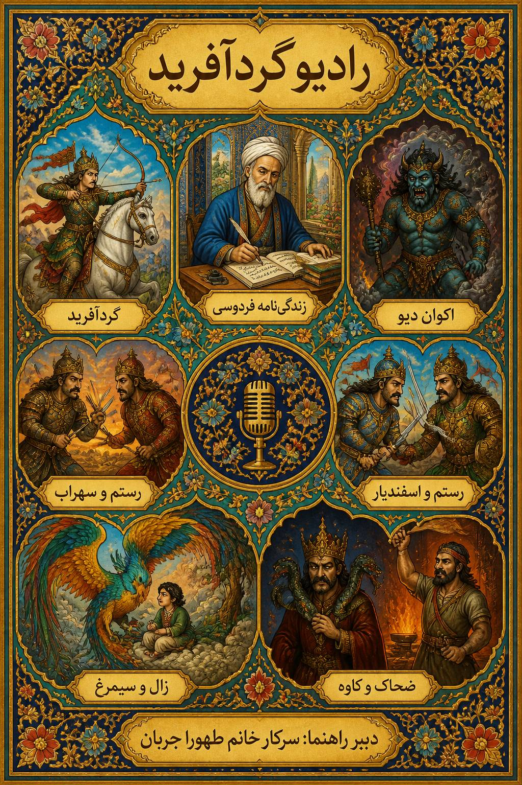

۱
قسمت اول — زندگی نامه ی فردوسی
در این قسمت با فردوسی و زندگی او آشنا میشویم و دلیل او برای نوشتن شاهنامه را میشنویم
داستانهای حماسی و اسطورهای شاهنامه فردوسی — گوش دهید و لذت ببرید

در این قسمت با فردوسی و زندگی او آشنا میشویم و دلیل او برای نوشتن شاهنامه را میشنویم
در این قسمت ما داستان ضحاک ماردوش و قیام کاوه آهنگر را میشنویم.
در این قسمت آغاز تلخ برای چنین قهرمان بزرگی را میشنویم
در این قسمت یکی از غمناک ترین داستان های شاهنامه را میشنویم.
در این قسمت نبرد رستم و اکوان دیو را میشنویم.
در این قسمت نبرد بین اسفندیار و رستم را میشنویم.
در این قسمت با شیرزنی به نام گرد افرید آشنا میشویم و روایتش را میشنویم.
برای اضافه کردن پادکست جدید، یک کارت جدید کپی کنید و فایل mp3 را در کنار بقیه فایلها قرار دهید.